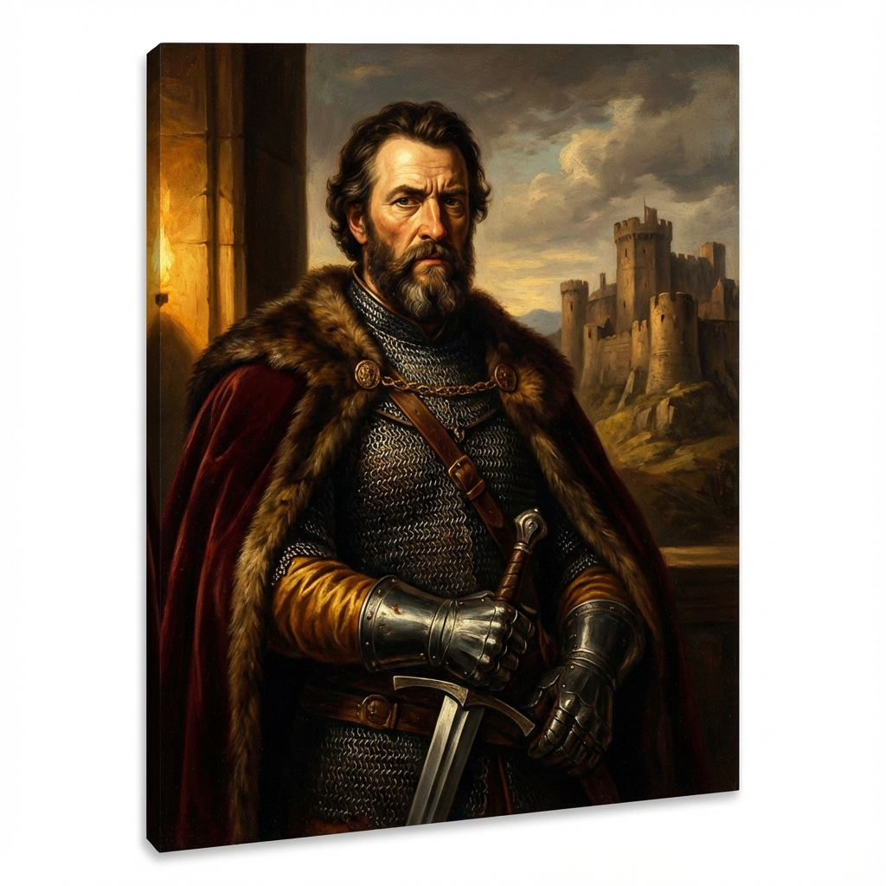
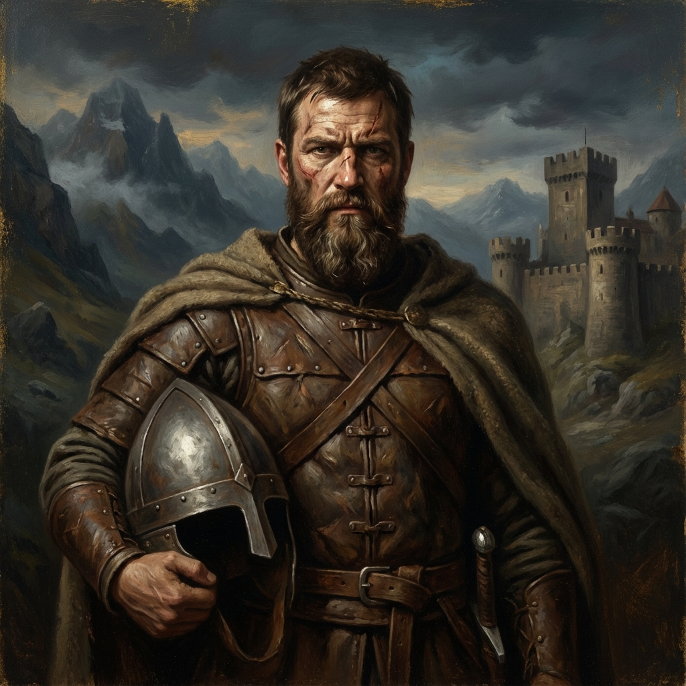
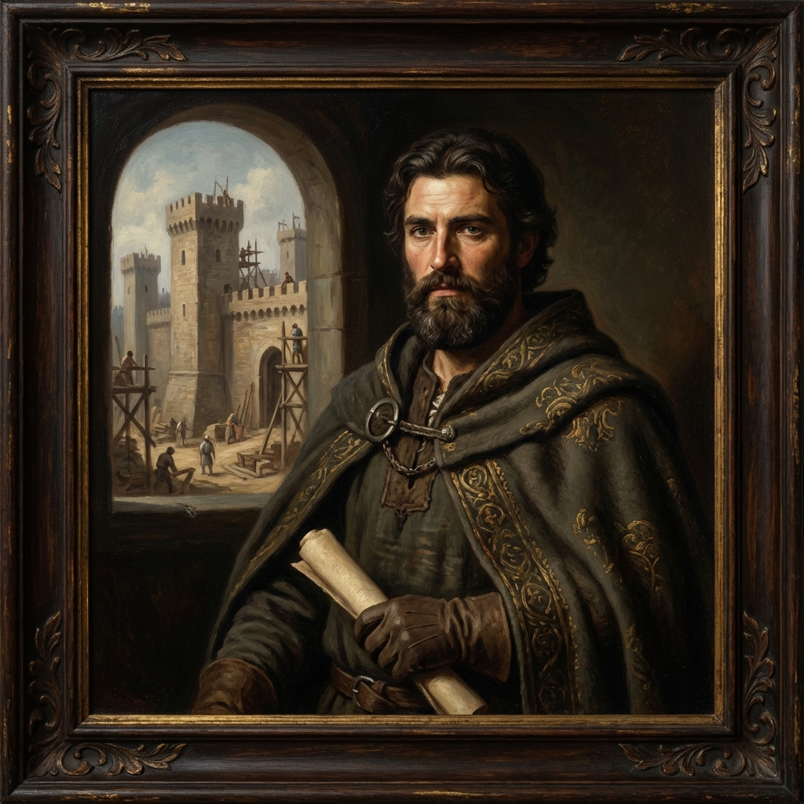

Condes de Castilla, Álava y Lantarón

Fernán González
El Buen Conde. Artífice de la independencia y figura central de nuestra historia.
Leer Leyenda




Emperadores Romanos e Hispanos

Militares y Gobernantes

Órdenes y Legados